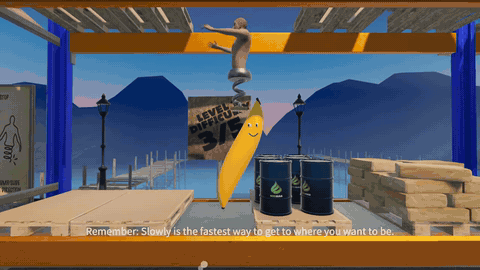
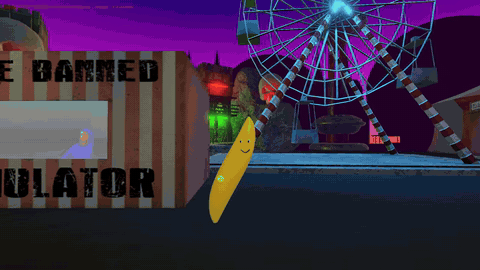
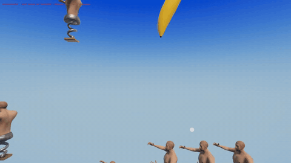
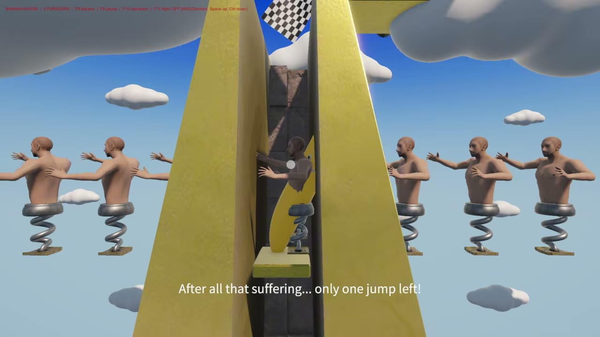

Spring Me Up review: a punishing spring climb, played as a banana

More Pain's Spring Me Up gives you one tool, a big spring on your body, and one job: climb. One bad angle sends you back. You stretch the spring, set the angle and try to land the jump. It's a 2.5D physics platformer in the vein of Getting Over It with Bennett Foddy and A Difficult Game About Climbing, and its store page promises "a peaceful, yet merciless experience." The merciless part held up.
I made it harder on purpose. A banana mod turned me into a giant yellow banana, and the mods also added shirtless spring men who chased me, grabbed me and launched me. Nearly six minutes in I admitted it: "I've made the game so much harder!" The modded build crashed to black once, early, with a spring man stuck inside the banana. I got knocked out of the map several times over the run, and for one stretch a mod made the whole level and me invisible. For a couple of minutes I played as the regular spring man with no mods, before the banana came back.



Each stage changes the theme. I went from a dockside warehouse to a torchlit cave, then a purple carnival with the game's best sight gag, a booth called You're Banned Simulator, and on to a stone temple and a dungeon. Late in the run the spring men stopped chasing me and we all flew on together, with the mods' flying, until one last jump took me to the "CONGRATS YOU DID IT" screen. One of the game's own lines reads: "You haven't lost your progress. You donated it." The game's own jokes landed harder than anything my mods added.